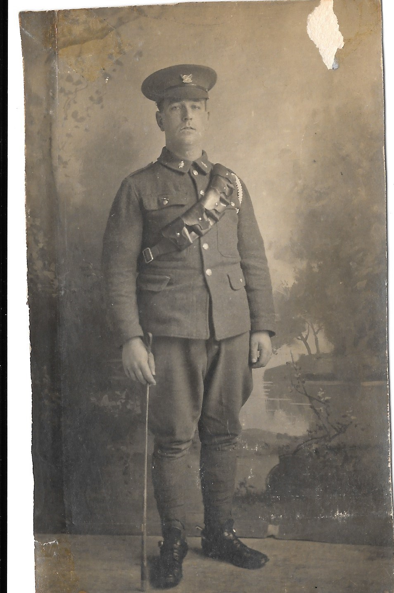
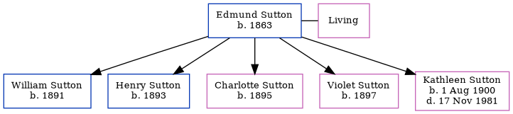

Arthur Albert Payton 1887 - 1973
[ Home ] | [ Calendar ] | [ Surnames Index ] | [ Census Index ] | [ Family History ]A house decorator and the child of William Payton (a brickmaker) and Caroline Mount, Arthur Payton, the second cousin three-times-removed on the mother's side of Nigel Horne, was born in Herne, Kent, England on Aug 6, 18871,2,3,4. He married Emily Austin at Christ Church, Herne Bay, Kent, England on Sep 23, 19086.
During his life, he was living in Hampton, Kent, England on Apr 5, 18911; in Herne Bay on Sep 29, 19392; and at 9 Clarendon Street in Herne Bay in 1973.
He died on Feb 24, 1973 in Canterbury, Kent, England4,5.
Parents
- William was born in 1844
- Caroline was born c. Aug 1849
Citations
- 1891 England, Wales & Scotland Census - Findmypast (was age 3 and the son of the head of the household)
- 1939 Register - Findmypast (was the head of the household)
- England & Wales births 1837-2006 - Findmypast
- England & Wales deaths 1837-2007 - Findmypast
- England & Wales Government Probate Death Index 1858-2019 - Findmypast
- England & Wales Marriages 1837-2005 - Findmypast
Media
Arthur Payton

England & Wales births 1837-2006 - BMD/B/1887/3/AZ/000435/154
England & Wales deaths 1837-2007 - BMD/D/1973/1/AZ/001068/009
1939 Register - TNA/R39/1739/1739F/002/35
England & Wales marriages 1837-2005 - BMD/M/1908/3/AZ/000302/069
Kent marriages and banns - GBPRS/CANT/M/97074346/1
Kent marriages and banns - GBPRS/CANT/M/94100479/1
England & Wales Government Probate Death Index 1858-2019 - GBOR/GOVPROBATE/C/1973-1973/00174296
Family Tree
Generated by ged2site. Last updated on Jun 11, 2024